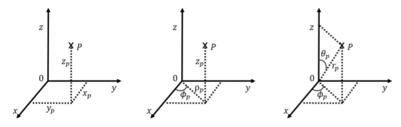

October, 2023
Physics, a Beautiful Science
Physics is a natural science that involves the study of matter and its motion through space and time, along with related concepts such as energy and force. It is the study of the universe itself; how it began, how it operates, and how it will be done.
Many scientific disciplines, such as biophysics, physical chemistry and engineering, are hybrids of physics and other sciences.
The application of physics is fundamental towards significant contributions in new technologies that arise from theoretical breakthroughs that we use daily. All electronics, cryptographic encryptions, medical instruments, the internet itself, and more have been the direct result of physics.
Models, Theories & Laws
A model is an evidence-based representation of something that is either too difficult or impossible to display directly.
A theory is an explanation for patterns in nature that is supported by scientific evidence and verified multiple times by various groups of researchers.
A law uses concise language, often expressed as a mathematical equation, to describe a generalized pattern in nature that is supported by scientific evidence and repeated experiments.
A background in physics is probably one of the most versatile career paths. You can use your skills to work in multiple disciplines including but not limited to astronomy, healthcare, engineering, energy, technology, meteorology, finance, and the like..
Recent developments in physics include discovery and imaging of black holes, quantum cryptography, quantum computing, AI & ML, Gravitational Waves, Understanding of the Universe through many missions like the recent JWST, Neutrino Astronomy, and many more exciting stuff.
The Scientific Method
The scientific method provides scientists with a well structured scientific platform to help find the answers to their questions.
How is a model different from a theory?(For instance, you have learned phrases like "the Dalton Atomic Model" and "Kinetic Theory of Gases".. why is one a model and the other a theory?) What is the difference between algorithms that are computationally secure and those that are information theoretically secure? What are common ways people’s passwords and personal information get compromised? How can one protect themselves from such attacks? We have discussed in class the discrepancy between the same observation but different analyses of a data set. We took the news regarding observations by JWST data being interpreted differently by different groups of scientists. A prominent bloc suggest that the electromagnetically undetectable, but seemingly gravitationally present "matter" is dark matter while dissidents suggest that Newton’s Universal Gravitation Law applies differently for distant large galaxies. Which idea do you seem to agree more with? Why? Research is extremely important for many different reasons; we recently saw its significance during the COVID-19 pandemic when many otherwise expensive journals were pressured into making the pandemic related researches published and accessible for free. The free movement of research led to many people believing in the methodology of the vaccine production and even more others chipping in ideas to better the research being done. Now that the pandemic is over, many of those articles are back on paywall and one has to pay large sums to access the research articles. Explain whether you agree on the current model of article publications or whether you think research articles should be open access always. Give examples of open access journals and/or research repositories. In collaborations like the CERN (European Organization for Nuclear Research), there are multiple people from different backgrounds, institutions, and even countries collaborating to do research. CERN is the home of many experiments such as ALICE(A Large Ion Collider Experiment), LHC(the Large Hadron Collider), CMS(Compact Muon Solenoid) which have been significant in many high energy physics experiments such as the one done to discover the famous Higgs Boson.
What (simply )is the significance of the Higgs Boson?
Why is such a big collaboration important in your opinion? Why wasn’t, say the Higgs Boson discovered in a small lab of 4 people in a rural town?
CMS(Compact Muon Solenoid) is a general purpose particle accelerator. Say, for example, a theorist proposed existence of a particle that you would like to detect. Based on electromagnetism concepts we discussed last semester, how would you design an experiment to detect said particle?
Physics communities are important to nourish underrepresented members of the community and also generally to advocate for physics within the general community. Out of the communities we have seen in class, which ones do you feel most interested by? Why? Your hobbies are probably directly or indirectly related to physics. List some of your hobbies and explain how physics plays a role. What is the difference between experiential and non-experiential knowledge? It is true that in science(as in any other field), rivalries do exist. It wouldn’t be an exaggeration to, perhaps, suggest that scientific rivalries may even be on the fiercer side of the rivalry spectrum, so to speak. Some of these rivalries include ones between Nikola Tesla and Thomas Edison, Isaac Newton and Gottfried Leibniz, Isaac Newton and Robert Hooke and ones between countries. It would be wrong to suggest that rivalries serve no purpose, however, in the pursuit of scientific truth, working with adversaries can pay off. A research dubbed Adversarial Collaboration Project which ran at UPenn hypothesized that for advancement of scientific facts, rivals would have to work together. What is your take on this? How different do you think the world could have been if adversarial collaborations were a common practice since the early days of science?
Scalars and Vectors
A vector quantity is any quantity that has magnitude and direction, such as displacement or velocity.
Geometrically, vectors are represented by arrows, with the end marked by an arrowhead. The length of the vector is its magnitude, which is a positive scalar. On a plane, the direction of a vector is given by the angle the vector makes with a reference direction, often an angle with the horizontal(usually +X-axis). The direction angle of a vector is a scalar.
Two or more vectors can be added to form another vector. The vector sum is called the resultant vector. We can add vectors to vectors or scalars to scalars, but we cannot add scalars to vectors. Vector addition is commutative and associative.
To construct a resultant vector of two vectors in a plane geometrically, we use the parallelogram rule. To construct a resultant vector of many vectors in a plane geometrically, we use the tail-to-head method.
Coordinate Systems and Components of a Vector
Vectors are described in terms of their components in a coordinate system. In two dimensions (in a plane), vectors have two components. In three dimensions (in space), vectors have three components.
A vector component of a vector is its part in an axis direction. The vector component is the product of the unit vector of an axis with its scalar component along this axis. A vector is the resultant of its vector components.
In a plane, there are two equivalent coordinate systems. The Cartesian coordinate system is defined by unit vectors î and ĵ along the x-axis and the y-axis, respectively. The polar coordinate system is defined by the radial unit vector r̂, which gives the direction from the origin, and a unit vector t̂, which is perpendicular (orthogonal) to the radial direction.
Vector Operations : Addition/Subtraction
We can graphically add/subtract vectors using triangle and parallelogram methods. To do that, however, we have to draw the vectors scaled.
When using parallelogram method, we can sort of make it hybrid by introducing mathematical tools such as the law of cosines b2 = a2 + c2 − 2ca cos θ such that θ is the angle between a and c.
Analytical methods of vector algebra are used routinely in mechanics, electricity, and magnetism. They are important mathematical tools of physics.
Vector Operations : Product
There are two kinds of multiplication for vectors. One kind of multiplication is the scalar product, also known as the dot product. The other kind of multiplication is the vector product, also known as the cross product. The scalar product of vectors is a number (scalar). The vector product of vectors is a vector.
Both kinds of multiplication have the distributive property, but only the scalar product has the commutative property. The vector product has the anticommutative property, which means that when we change the order in which two vectors are multiplied, the result acquires a minus sign.
Useful Mathematical Facts
Polar coordinates in a two dimensions $\begin{cases} x = r \cos \varphi \\ y = r \sin \varphi \end{cases}$

Cylindrical coordinate system $\begin{cases} \rho &= \sqrt{x^2+y^2}\\ \tan(\phi) &= \frac{y}{x}\\ z&=z\end{cases}$
Spherical coordinate system $\begin{cases} r &= \sqrt{x^2+y^2+z^2}\\ \cos(\theta) &= \frac{z}{r}=\frac{z}{\sqrt{x^2+y^2+z^2}}\\ \tan(\phi) &= \frac{y}{x}\\\end{cases}$
Equal vectors & condition for equivalence $\vec{A} = \vec{B} \Leftrightarrow \begin{cases} A_{x} = B_{x} \\ A_{y} = B_{y} \\ A_{z} = B_{z} \end{cases}$
A unit vector $\hat{V} = \dfrac{\vec{V}}{V}$
Dot product of unit vectors î · ĵ = ĵ · k̂ = k̂ · î = 0
Cross product of unit vectors $\begin{cases} \hat{i} \times \hat{j} = + \hat{k}, \\ \hat{j} \times \hat{l} = + \hat{i}, \\ \hat{l} \times \hat{i} = + \hat{j} \ldotp \end{cases}$
Basics of vector understanding.
A vector has zero magnitude. Is it necessary to specify its direction? Explain. Can a magnitude of a vector be negative? If three vectors sum up to zero, what geometric condition do they satisfy? Show all the steps.
For the figure given below, use triangle or parallelogram methods of vector addition to find the resultant. Use law of cosines to find the length of the resultant.
3A⃗ − 2F⃗
A⃗ − C⃗ + B⃗
A⃗ − D⃗ + F⃗ − 4F⃗
The magnitudes of two displacement vectors are |A⃗| = 12 cm and |B⃗| = 5 cm. What are the largest and the smallest values of the magnitude of the resultant R⃗ = A⃗ + B⃗? The polar coordinates of a point are $(-\dfrac{4}{3}\pi,4)$. What are its Cartesian coordinates?
What is the displacement vector from point (1,2,3) to point (7,8,9)?
What angle does that displacement vector make with the x axis?
A force vector points at an angle of 530 above the +x axis. It has a y component of 340 newtons. Find
the magnitude
the x component
Vector A has a magnitude of 9.00 units and points due West. Vector B points due north.
What is the magnitude of B, if the vector A+B points 45.00 north of east?
Find the magnitude of A + B.
For an object moving in uniform circular motion, the direction of the instantaneous acceleration vector is
equal to zero directed radially outward
directed radially inward tangent to the path of motion
Which of the following sets of 3 forces CANNOT have a vector sum of zero? Why?
10, 10 and 10 Newtons 10, 10 and 20 Newtons
10, 20 and 20 Newtons 10, 20 and 40 Newtons
What is the magnitude (length) of the vector 2î + 9ĵ − 4k̂? What is the unit vector in the direction of the above vector? After you find the unit vector, show that it is a unit vector by calculating its magnitude. Convert the following equation using Cartesian coordinates to cylindrical ones.
${x^4} + \dfrac{2}{7}{x^3} - 6z = 4 - 2{y^2}$
The standard equation of an ellipse in the Cartesian plane is $\dfrac{x^2}{a^2}+\dfrac{y^2}{b^2}=1$. Show that its equation in the polar coordinate system is given by $r = \dfrac{1}{1+e \cos \theta}$.
Let’s assume we have three vectors such that A⃗ = 3î − 7ĵ, B⃗ = î + ĵ + 4k̂, andC⃗ = 5ĵ − 8k̂. Find the following
|A⃗| and Â
the component of C⃗ along A⃗
A⃗ × C⃗
A⃗ × (C⃗ ⋅ B⃗)
A⃗ × (C⃗ × B⃗)
î ⋅ (C⃗ × B⃗)
Convert the following equation in Cartesian coordinates to spherical ones.
3x2 + y2 = 8x + 2z − 4
Find a unit vector parallel to either direction of the line described by 4x+y = 8.
Vector B⃗ is 7.0 cm long and vector A⃗ is 4.0 cm long. Find the angle between these two vectors when |A⃗ + B⃗|=|A⃗ − B⃗|
Draw the vectors and join their tails after you have found the angle between them. What special kind of parallelogram have you constructed using the two vectors and their extensions?
Calculate the vector product of a⃗ and b⃗ given that a⃗= 2î + ĵ + k̂ and b⃗ = î – ĵ – k̂ . Show that the area of a parallelogram formed by two vectors is equal to their cross product. What is the angle between vectors A⃗ = ⟨1,2,3,4⟩ and B⃗ = ⟨0,−1,4,−2⟩? For the two vectors above, find ${{\mathop{\rm proj}\nolimits} _{\,\vec A}}\,\vec B$.